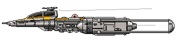
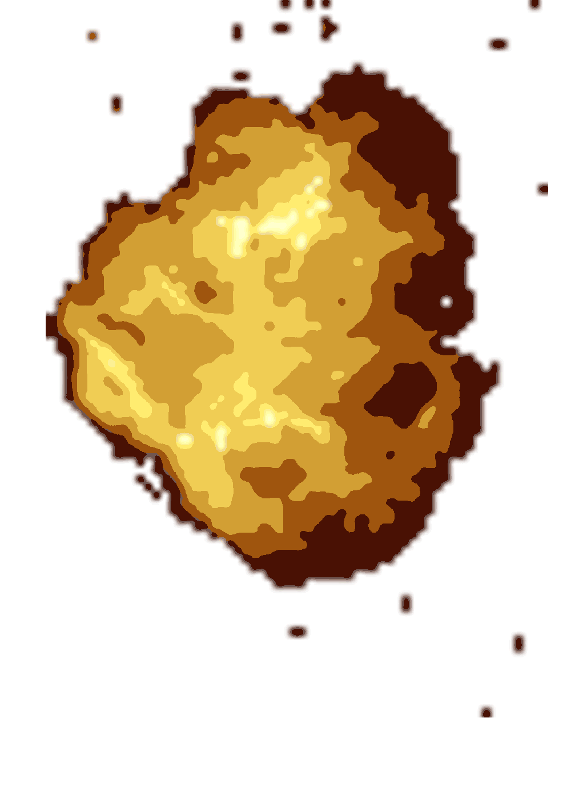

haha this is base
Welcome to LukeFolio
This is a website I hacked together in my free time to showcase some of the more recent involvements in my life.
Also, I'll be honest... I wanted an excuse to gather some gifs from GIPHY's API. ;)
Cheers!
Luke Short
 